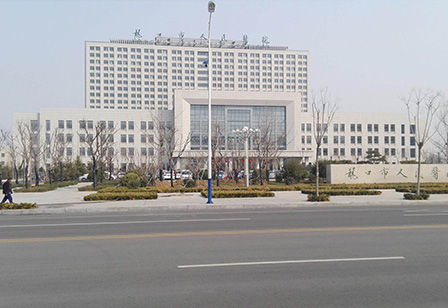

网站首页
基层组织建设
农村基层
城市基层
非公经济社会组织
其他领域
党员队伍建设
党员发展
党员教育
党员管理
党员风采
干部工作
选拔任用
教育培训
监督管理
考核评价
人才工作
引才引智
培育管理
人才风采
公务员管理
公务员考录
职务与职级并行
公务员培训
公务员考核
党建研究
创新案例
课题研究
经验交流
组工队伍建设
组工动态
组工活动
组工文化
廉政建设
党员悦读
政策法规
党史纵览
先锋评论
他山之石
基层组织建设
农村基层
城市基层
非公经济社会组织
其他领域
党员队伍建设
党员发展
党员教育
党员管理
党员风采
干部工作
选拔任用
教育培训
监督管理
考核评价
人才工作
引才引智
培育管理
人才风采
公务员管理
公务员考录
职务与职级并行
公务员培训
公务员考核
党建研究
创新案例
课题研究
经验交流
组工队伍建设
组工动态
组工活动
组工文化
廉政建设
党员悦读
政策法规
党史纵览
先锋评论
他山之石
最新动态
时政要闻
党建动态
通知公告
先锋视频
党建新闻
基层发现
电教远教
专题频道
脱贫攻坚党旗红
社会主义思想
图文承德
看承德
走基层
新发现
图文承德
看承德
>
走基层
>
新发现
>
走基层
您的位置：
主页
>
图文承德
>
走基层
>

万行广场岩土工程勘察
1、工程项目名称：烟台万行广场岩土工程勘察 2、项目完成单位：山东岩土勘测设计研究院有限公司 3、勘察设计人员：姜学军、曹阳、叶枝顺、卢强、左鹏、孙莉 4、评选工程类别：
简介 ∨
1、工程项目名称：烟台万行广场岩土工程勘察
2、项目完成单位：山东岩土勘测设计研究院有限公司
3、勘察设计人员：姜学军、曹阳、叶枝顺、卢强、左鹏、孙莉
4、评选工程类别：勘察工程
5、获奖年份：2017年
6、获奖等级：一等（市级）
紫塞先锋网
电话：0314-2050747
传真：0314-2050747
邮箱：cdycb@126.com
地址：河北省承德市政府行政中心
Copyright © 2002-2019 紫塞先锋党建网 版权所有 备案号：冀ICP备1325325253